After a violent shipwreck, billionaire playboy Oliver Queen was missing and presumed dead for 5 years before being discovered alive on a remote island in the North China Sea. When he returns home to Starling City, his devoted mother, Moira, much-beloved sister, Thea, and best friend, Tommy welcome him home, but they sense Oliver has been changed by his ordeal on the island. While Oliver hides the truth about the man he has become, he desperately wants to make amends for the actions he took as the boy he was. Most particularly, he seeks reconciliation with his ex-girlfriend, Laurel Lance. As Oliver reconnects with those closest to him, he secretly creates the persona of the Arrow, a vigilante archer, to right the wrongs of his family, fight the ills of society and restore Starling City to its former glory. By day, Oliver plays the role of a wealthy, carefree and careless philanderer he used to be, flanked by his devoted chauffeur and bodyguard, John Diggle, while carefully concealing the secret identity he turns to under the cover of darkness. However, Laurel's father, Detective Quentin Lance, is determined to arrest Arrow for operating in his city. Meanwhile, Oliver's own mother, Moira, knows much more about the deadly shipwreck than she has let on and is more ruthless than he could ever imagine. Arrow follows billionaire playboy Oliver Queen, who claimed to have spent five years shipwrecked on Lian Yu, a mysterious island in the North China Sea, before returning home to Starling City (later renamed "Star City") to fight crime and corruption as a secret vigilante whose weapon of choice is a bow and arrow. Throughout the series, Oliver is joined by others, among them former soldier John Diggle, I.T. expert and skilled hacker Felicity Smoak, former assassin Sara Lance, aspiring vigilante Roy Harper, Oliver's sister Thea, and attorney-turned-vigilante Laurel Lance. During the first five seasons of the show, characters from Oliver's past appear in a separate story arc based on Oliver's flashbacks. Starting with season seven, a series of flash-forwards focus on Oliver's children William and Mia, exploring how present events would affect their future and Green Arrow's legacy.
Arrow is an American superhero television series developed by Greg Berlanti, Marc Guggenheim, and Andrew Kreisberg based on the DC Comics character Green Arrow, a costumed crime-fighter created by Mort Weisinger and George Papp, and is set in the Arrowverse with other related television series. The series premiered in the United States on The CW on October 10, 2012, and was primarily filmed in Vancouver, British Columbia, Canada. In January 2019, The CW renewed the series for a ten-episode eighth season, announcing in March that it would be the final season. The season premiered on October 15, 2019; the series finale aired on January 28, 2020.
Synopsis:
Starring
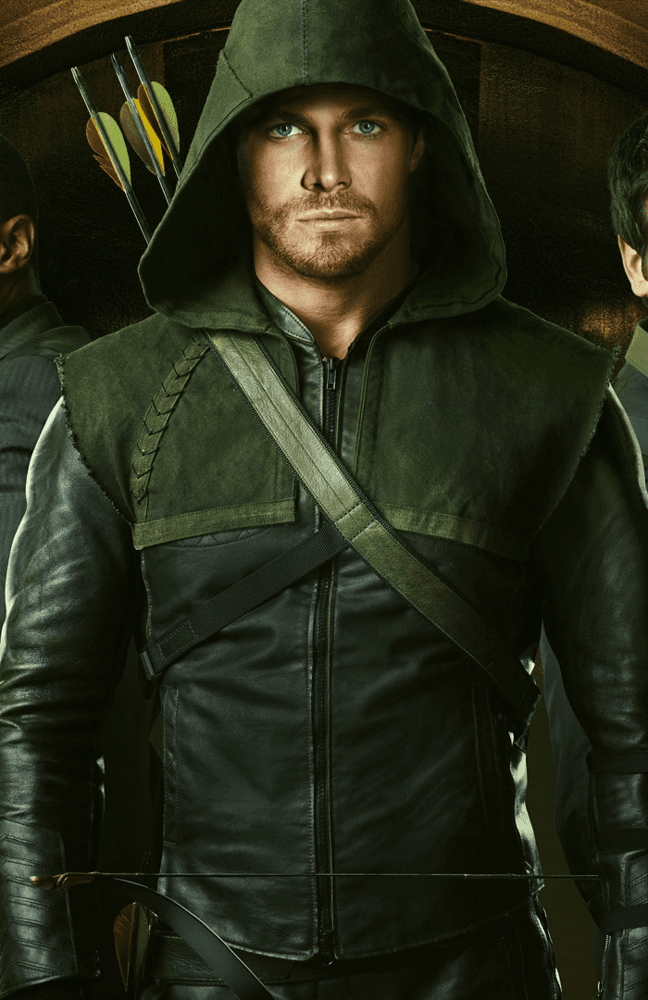 1. Stephen Amell as Oliver Queen/The Hood/Arrow/Al Sah-him/Green Arrow |
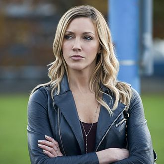 2. Katie Cassidy as Laurel Lance/ Black Canary/Black Siren |
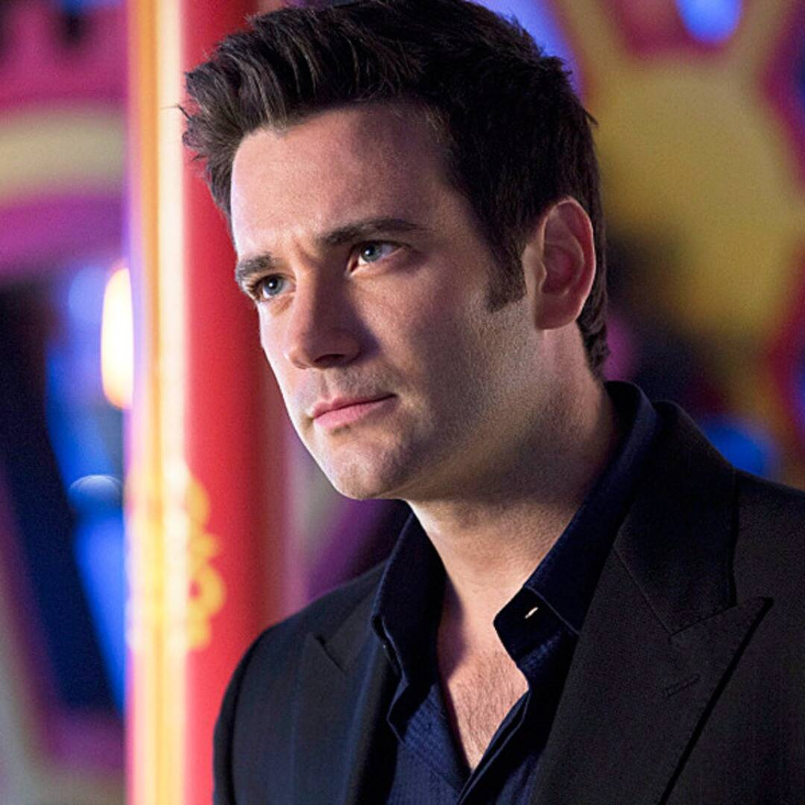 3. Colin Donnell as Tommy Merlyn |
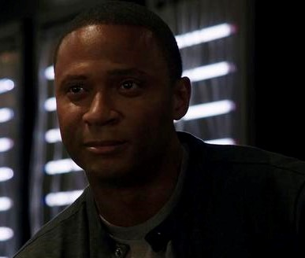 4. David Ramsey as John Diggle/Spartan |
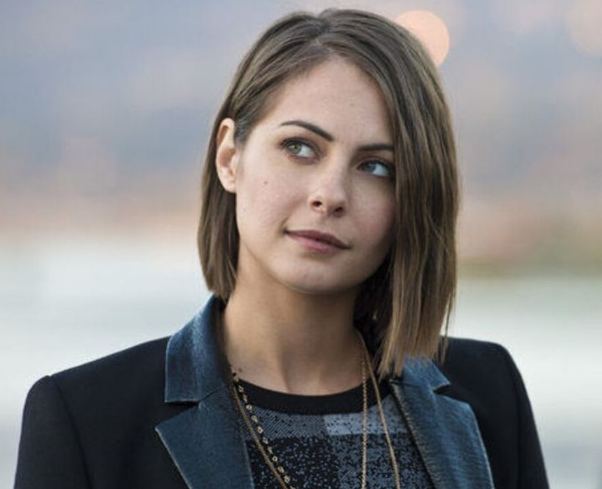 5. Willa Holland as Thea Queen/Speedy |
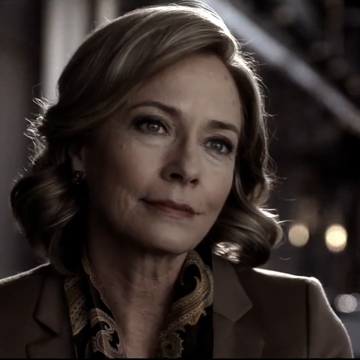 6. Susanna Thompson as Moira Queen |
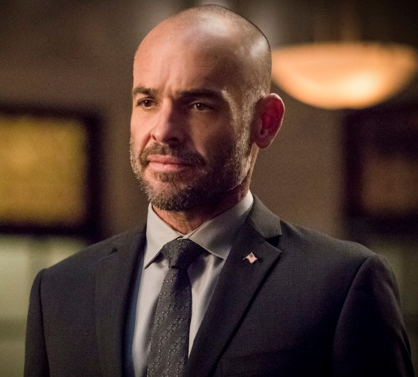 7. Paul Blackthorne as Quentin Lance |
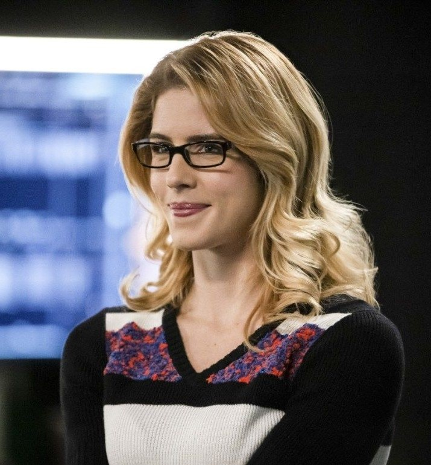 8. Emily Bett Rickards as Felicity Smoak/Overwatch |
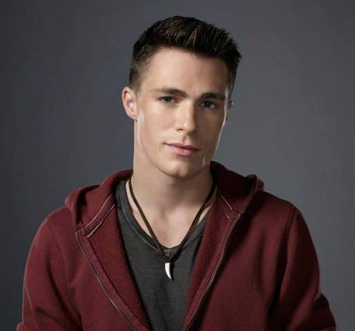 9. Colton Haynes as Roy Harper/Arsenal |
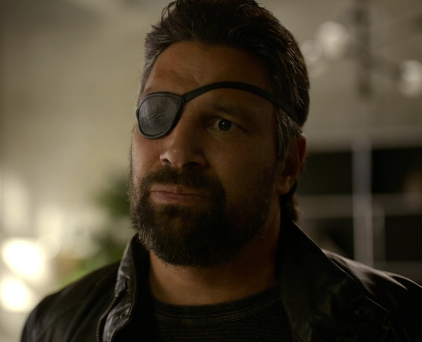 10. Manu Bennett as Slade Wilson/Deathstroke |
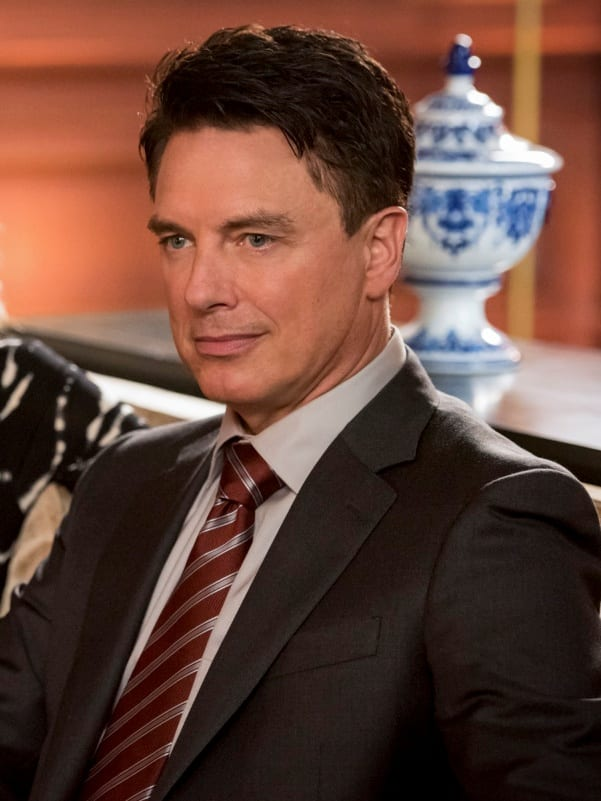 11. John Barrowman as Malcolm Merlyn/Dark Archer/Ra's al Ghul |
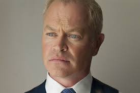 12. Neal McDonough as Damien Darhk |
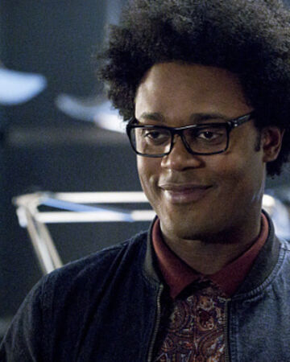 13. Echo Kellum as Curtis Holt/Mr. Terrific |
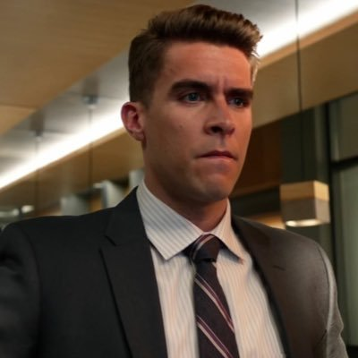 14. Josh Segarra as Adrian Chase/Prometheus |
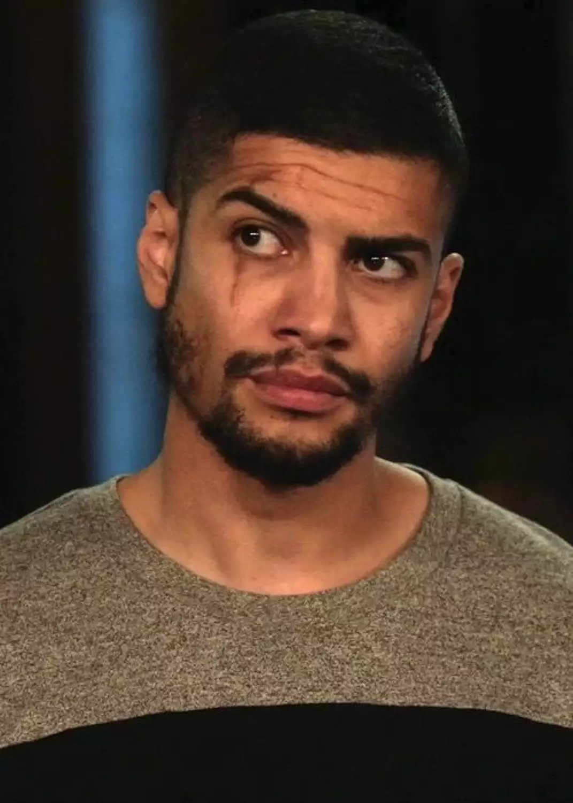 15. Rick Gonzalez as Rene Ramirez/Wild Dog |
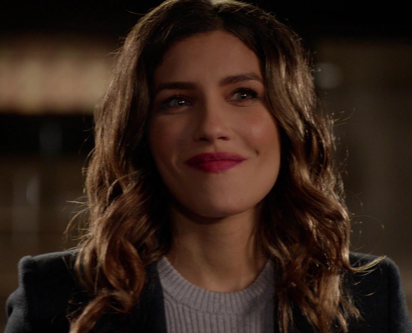 16. Juliana Harkavy as Dinah Drake/Black Canary |
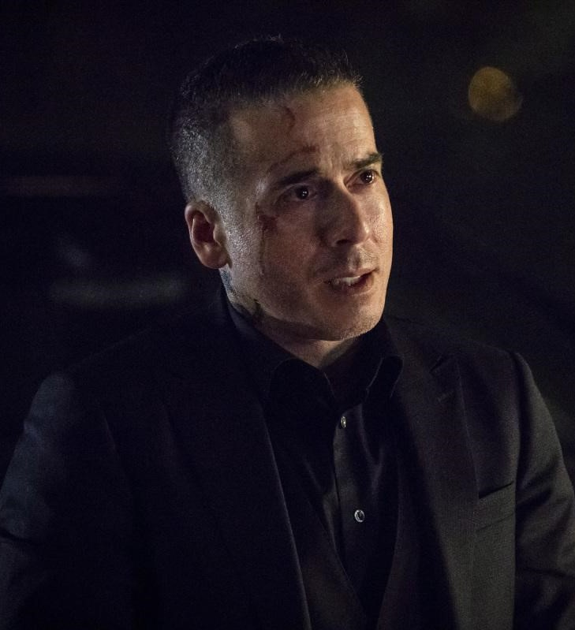 17. Kirk Acevedo as Ricardo Diaz/Dragón |
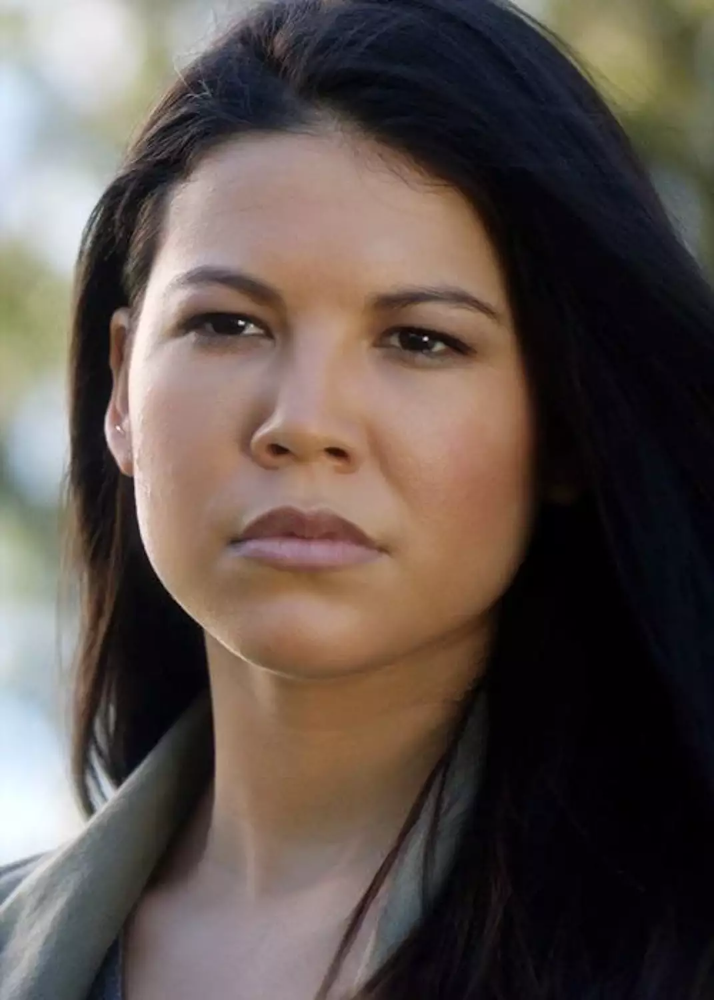 18. Sea Shimooka as Emiko Adachi/Green Arrow/Red Arrow |
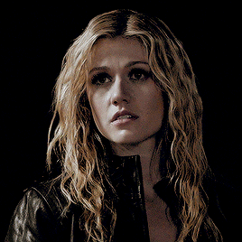 19. Katherine McNamara as Mia Smoak-Queen/Blackstar/Green Arrow |
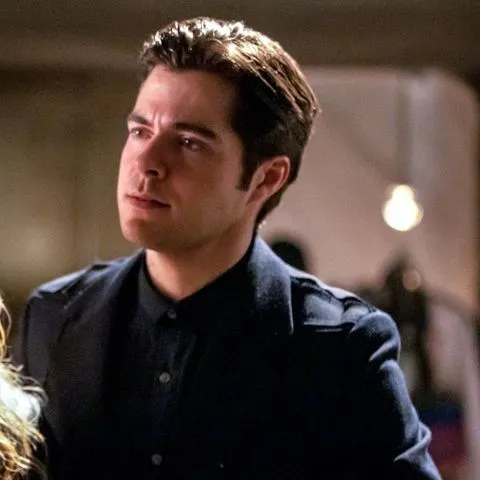 20. Ben Lewis as Adult William Clayton |
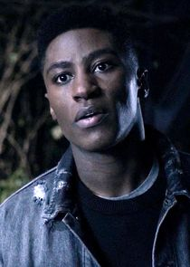 21. Joseph David-Jones as Connor Hawke |
Seasons:
Season 1
| Episodes | First Aired | Last Aired |
|---|---|---|
| 23 | October 10, 2012 | May 15, 2013 |
In season one, Oliver returns to Starling City and is reunited with his family and friends, including Tommy Merlyn and Laurel Lance. By night, he acts as a vigilante, known as “The Hood”, hunting down those listed in his father's notebook, with assistance from John Diggle and Felicity Smoak. A conspiracy known as “The Undertaking”, led by Malcolm Merlyn, threatens the city. The season also features flashbacks to Oliver's first year on the island, and his struggle to survive, alongside both new allies, including Slade Wilson, and foes.
Season 2
| Episodes | First Aired | Last Aired |
|---|---|---|
| 23 | October 9, 2013 | May 14, 2014 |
In season two, following the death of Tommy Merlyn, Oliver vows to no longer kill. Operating under new alias "The Arrow" this is tested when the city comes under attack from Slade. He also struggles to balance his vigilante activities alongside his role as CEO of Queen Consolidated. The season sees the return of Sara Lance, now also known as “The Canary”, as well as the introduction of government agency A.R.G.U.S and its leader Amanda Waller. The flashbacks see Oliver face a new threat on Lian Yu, as well as revealing the origins of his feud with Slade.
Season 3
| Episodes | First Aired | Last Aired |
|---|---|---|
| 23 | October 8, 2014 | May 13, 2015 |
In season three, following Sara's murder and the loss of his family's company to Ray Palmer, Oliver refuses to believe he can lead a normal life whilst continuing as The Arrow. He becomes embroiled in a conflict with Ra's al Ghul, in order to protect his sister Thea. Felicity becomes Vice-President of the now renamed Palmer Technologies and Laurel sets out to follow in Sara's footsteps, assuming the mantle of Black Canary. The season's flashbacks see Oliver escape Lian Yu, only to be forced to work with Waller in Hong Kong, attempting to stop the release of a lethal pathogen.
Season 4
| Episodes | First Aired | Last Aired |
|---|---|---|
| 23 | October 7, 2015 | May 25, 2016 |
In season four, Oliver and Felicity are living in Ivy Town, but return to the renamed Star City, to fight terrorist group H.I.V.E., led by Damien Darhk. Oliver adopts the moniker "Green Arrow” whilst also running for mayor. The discovery of the existence of his son William, and his decision to conceal the truth, leads to the breakup of his relationship with Felicity. Laurel is killed by Darhk, and Oliver discovers his plan to detonate nuclear weapons. The season's flashbacks see Oliver returned to Lian Yu by Waller, where he attempts to in infiltrate criminal group Shadowspire.
Season 5
| Episodes | First Aired | Last Aired |
|---|---|---|
| 23 | October 5, 2016 | May 24, 2017 |
In season five, Oliver and Felicity recruit a new team of vigilantes to aid their mission, including former police detective Dinah Drake, as the new Black Canary. Oliver struggles to adjust to his break-up with Felicity, alongside trying to balance his new role as mayor with the threat posed by the deadly Prometheus. The season also sees the introduction of an antagonistic version of Laurel Lance, known as Black Siren, a doppelganger from Earth-2, who made her debut during the second season of The Flash. In the season's flashbacks, Oliver travels to Russia where he joins the Bratva, and is trained by Talia al Ghul, before returning to Lian Yu.
Season 6
| Episodes | First Aired | Last Aired |
|---|---|---|
| 23 | October 12, 2017 | May 17, 2018 |
In season six Oliver attempts to balance his vigilantism alongside his role as mayor, whilst also being a father to William, following the death of the boy's mother. He rekindles his relationship with Felicity, with the pair marrying in the season's Arrowverse crossover. A new threat in the form of terrorist hacker Cayden James and his criminal gang emerges. When Ricardo Diaz kills James, and with team Arrow facing a bitter split, Oliver is forced to enlist the aid of the FBI, striking a deal that leads to his incarceration in federal prison.
Season 7
| Episodes | First Aired | Last Aired |
|---|---|---|
| 23 | October 15, 2018 | May 13, 2019 |
In season seven, Felicity seeks new allies to help catch Diaz, and release Oliver from prison. Following his defeat of Diaz and prison release, Oliver and his team are deputized by the SCPD. His half-sister, Emiko Queen, emerges as the new Green Arrow; however, it is later revealed she is the leader of terrorist group the Ninth Circle. The season features flash-forwards to twenty years into the future, with the now adult William receiving a mysterious message. Joining with Oliver's former allies, he discovers his sister, Oliver and Felicity's daughter Mia, and works to save the city from another attack.
Season 8
| Episodes | First Aired | Last Aired |
|---|---|---|
| 23 | October 15, 2019 | January 28, 2020 |
In the eighth and final season, the Monitor recruits Oliver to aid him in his mission to prevent the coming Crisis. William, Connor Hawke, and Mia mysteriously time travel from 2040 to the present-day Star City. During the Crisis, Oliver sacrifices himself and becomes the Spectre in order to stop the Anti-Monitor. Following their final battle, a new universe is born at the cost of Oliver's life. However, he is reunited with Felicity in a “paradise dimension”, in the final scene of the series.